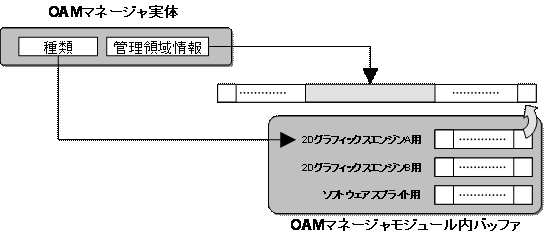

OAM Manager Overview
Conceptual Diagram

Description
The OAM Manager wraps around the OAM of the 2D graphics engine and provides an easy-to-use interface. By using the OAM Manager, it is possible to limit the position where the OAM is used and the number when using the OAM. It can also render registered OBJs with software sprite rendering. Rendering method is specified when the OAM Manager is created.
The OAM Manager uses the OAM software sprite rendering module as a substitute module to make the software sprite rendering feature possible.
OAM Management Feature
The OAM Manager can specify the areas it manages from among 2D graphics engine's 128 OAMs. Using this feature, the user can combine the individual OBJ they want to display in the OAM and the OBJ displayed using the OAM Manager.
Extended OAM Manager
By switching the OBJs set in the OAM in order with the Extended OAM Manager, it is possible to virtually display more OBJs than the upper OAM limit of 128. The Extended OAM Manager has internal data organization buffers named NNSG2DOamProxy and NNSG2DAffineParamProxy, which take the place of OAM attributes and Affine parameters (respectively). The OAM data registered in the Manager becomes proxy data and are stored in the previously described buffers. The buffer contents are then applied to the hardware and the render processing is carried out. By copying the buffer contents to the hardware in time segments, it becomes possible to apparently display a number of OBJs greater than the 2D graphics engine's maximum limit. Although the OBJ will flicker, this function can be used to display unimportant game objects. The part of the buffer content to be processed by hardware is passed by a function pointer to an external module. Therefore, it is also possible for it to function as a high-level module that a user creates in the OAM Manager.
See Also
None.
Revision History
12/06/2004 Initial version.